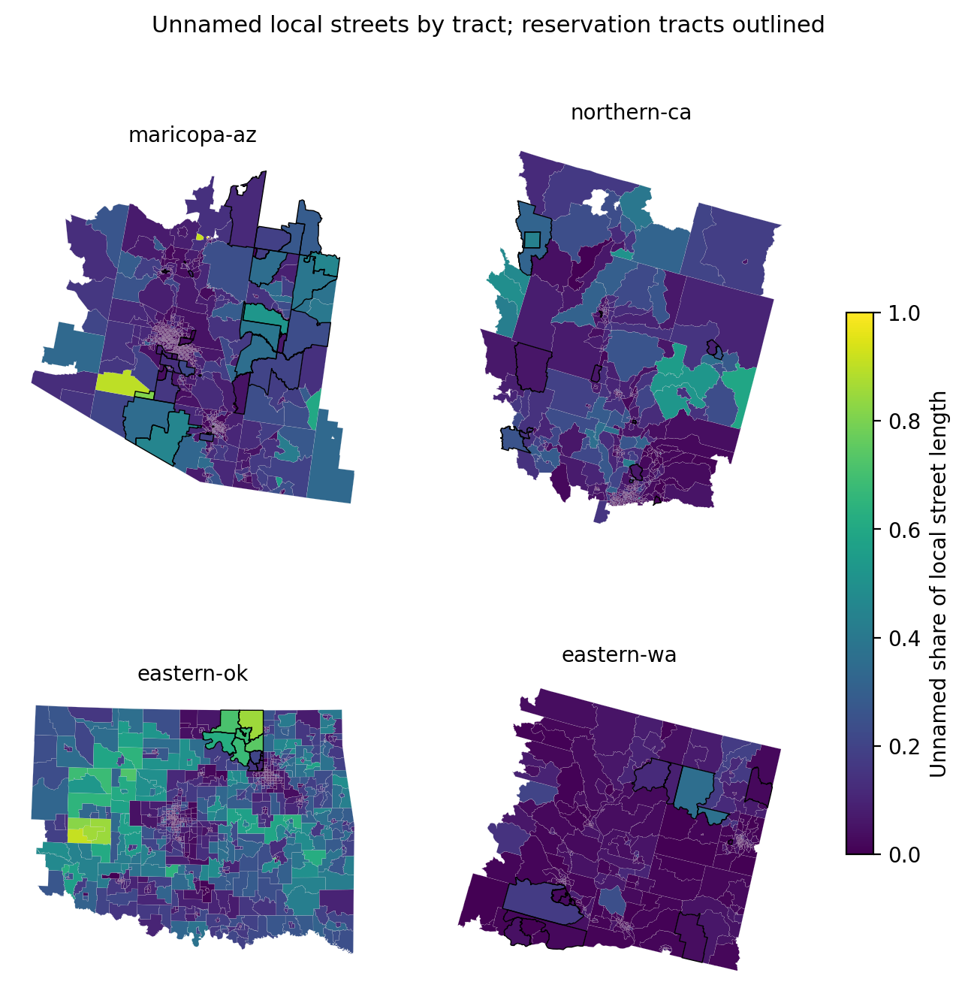

The challenge's coverage measures and every Bias Scorecard metric count road length and features, so a road drawn without a name counts as fully covered. Using the challenge data (Overture Maps release 2026-08-19.0 and the strata tables), this entry measures the share of drivable road length with no name in each of 9,794 scored tracts and compares tribal with non-tribal tracts within the same region and rurality class. On 80 federally recognised reservation tracts, local streets are unnamed 9.5 percentage points more often than on matched non-tribal tracts (95% county bootstrap interval 3.5 to 14.7), while highways on the same tracts show no difference (−0.4). The Osage Reservation reaches +27.6 points, with 57% of its drivable length unnamed. In 19 reservation tracts, home to 55,092 people, at least 30% of local street length has no name, against 13% of comparable non-tribal tracts. Several of these tracts combine unnamed streets with recent wildfire and high social vulnerability. Emergency dispatch, evacuation orders and relief operations locate people by street name, so these residents are the hardest to reach in exactly the events the challenge regions face.

@techreport{ouma2026unnamed,
title = {Unnamed Local Roads on Tribal Reservations: A Coverage
Gap the Bias Scorecard Cannot See},
author = {Ouma, Craig Carlos},
year = {2026},
month = {October},
institution = {Independent Researcher},
note = {Zindi Bias Bounty Mapping Equity Challenge},
url = {https://craigouma.github.io/bias-bounty-mapping-equity-challenge/bias-discovery/}
}